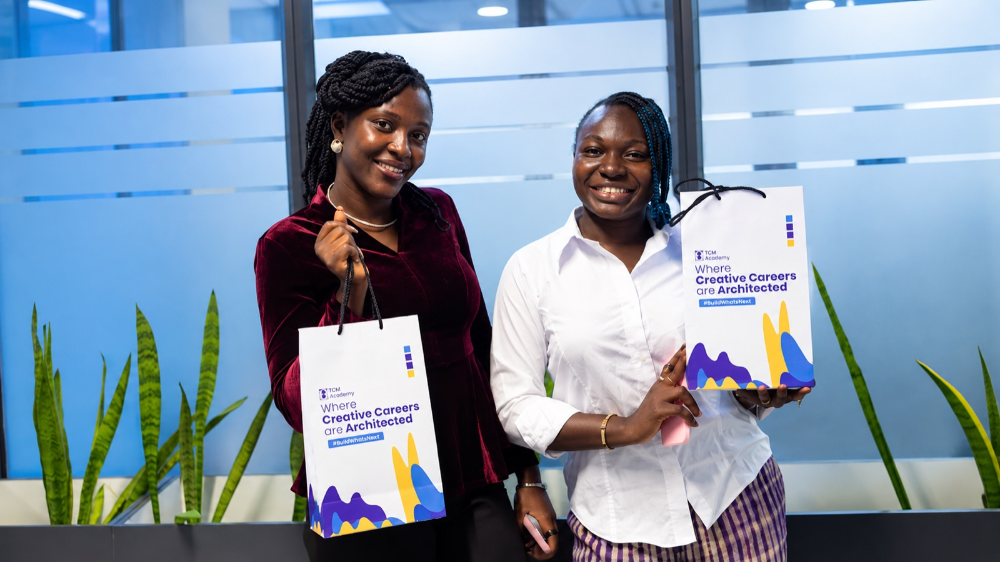
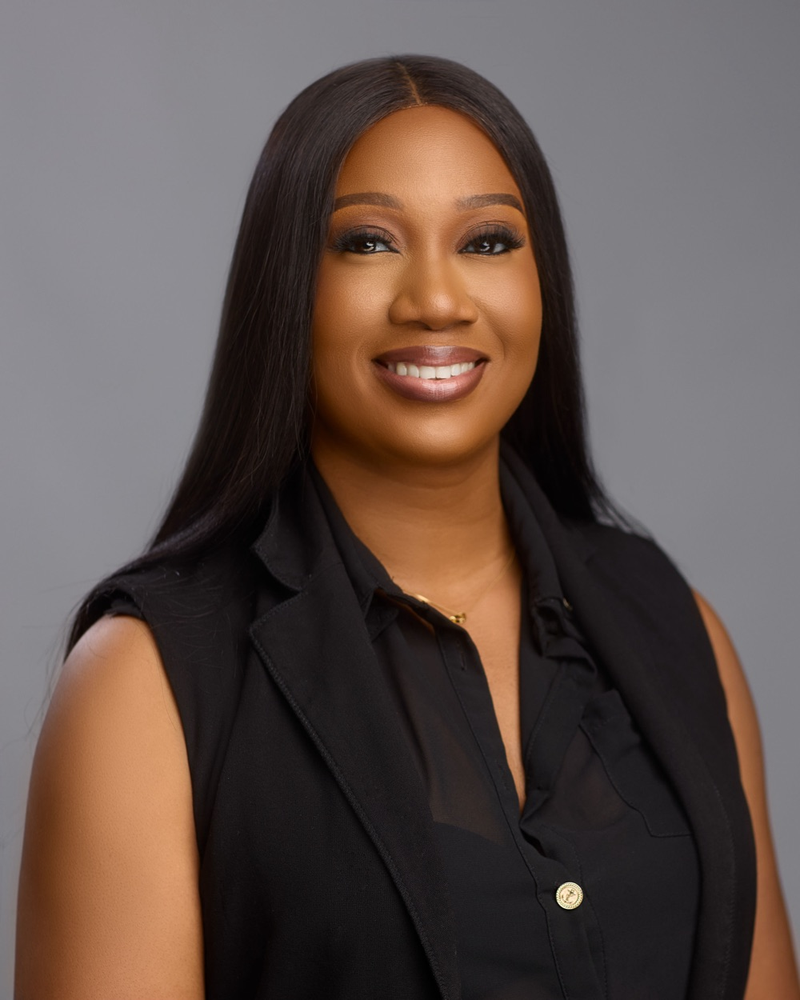
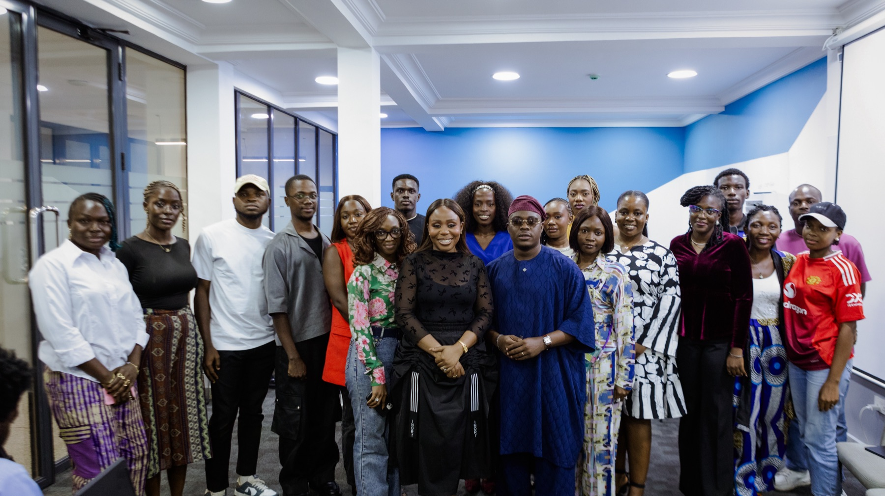
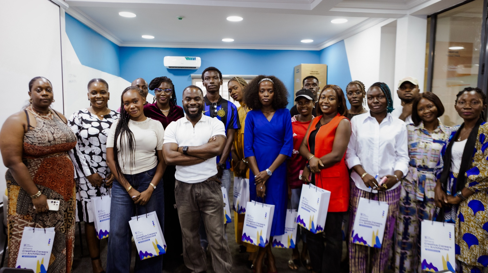

TGM Academy has launched its inaugural cohort, marking the start of its mission to train and certify 10,000 professional talent managers across Africa by 2030. The first cohort, which began on September 7, 2026, is receiving structured training alongside direct engagement with experienced professionals across talent management, entertainment and the creative economy like Adaora Mbelu, Michael Akinkunmi, Ann Obaseki, Olufemi Oguntamu, Seun Ajayi and many others. The programme combines Learning Management System (LMS)-based coursework with weekly Virtual Q&A sessions and direct engagement with experienced professionals working across the creative economy. Students are currently undertaking the first module, Introduction to Talent Management in the Creative Economy, which introduces the foundations of the profession while connecting classroom learning to the realities of managing creative careers.
The Academy’s industry-led approach was demonstrated during its first Fireside Chat on September 18, where students engaged directly with talent managers Ann Obaseki and Olufemi Oguntamu, popularly known as Penzaar, alongside Nollywood actor Seun Ajayi. The session brought together perspectives from both sides of the talent management relationship, giving students the opportunity to hear from professionals managing creative careers as well as a talent working with a manager.
Ann Obaseki, founder of The Talentville Africa, brought more than two decades of experience across talent management, media, entertainment and brand strategy to the conversation. Having discovered, managed and developed talents including Basketmouth, Bovi and Ini Dima-Okojie, Obaseki challenged students to recognize that effective talent management begins with the manager’s own development.
“Your first talent is yourself,” Obaseki told the students, emphasizing the importance of continuous personal and professional development for managers seeking to build sustainable careers in the industry.

She also highlighted the commercial responsibility of talent managers, encouraging aspiring professionals to develop their ability to identify value, pitch opportunities, negotiate deals, and create commercial pathways for the talents they represent.
Olufemi Oguntamu, founder and CEO of Penzaarville Africa, brought more than a decade of experience spanning media strategy, public relations, digital media, business development and talent management. He gave students insight into the responsibilities that extend beyond the public-facing image of a talent manager, including contracts, negotiations, rates, insurance, networking, communication, and the day-to-day management of relationships with talent.
Oguntamu also emphasized the importance of proactive relationship-building and positioning managers as opportunity creators within the industry.

“Talents will only keep working with you if they know you have what it takes to keep them flying. Make sure you get into rooms before your talent,” he told the students.
The conversation also addressed the importance of transparency in manager-talent relationships, particularly around contracts, negotiations, and career decisions. Oguntamu encouraged aspiring managers to ensure that talents understand the agreements governing their professional relationships and that communication remains clear throughout the management process.
Providing the perspective of a creative working with a talent manager, actor, voice-over artist, filmmaker and media entrepreneur Seun Ajayi spoke about the qualities he considers important in a manager. He identified vision, strategy, communication, flexibility, negotiation, emotional intelligence, relationship-building, networking, and integrity as key components of an effective manager-talent relationship.
Ajayi also highlighted the broader role of negotiation in talent management, noting that opportunities, collaborations, access and relationships can be as important to a talent career as financial terms.
“A manager-talent relationship should be organic. It should grow. It grows like a marriage,” Ajayi said, highlighting the importance of trust, communication and genuine connection between talent and manager.
The session also featured a surprise appearance from on-air personality, content creator, actor and event host Jay-On-Air, who shared additional perspectives on the responsibilities of talent managers, including integrity, transparency, passion and consistently acting in the best interest of the talent.

For Cohort 1 students, the programme is already reshaping their understanding of what professional talent management involves.
Ikechukwu Anyanwu, a lawyer working in the creative space, said the first two weeks of the programme had expanded his understanding of how managers identify, assess and develop talent.
“I’ve been able to take home a lot in regard to talent management. How you can discover your talents, how you evaluate them, and how you know if this talent is worth investing in. And how to at least keep your relationship with your talents going strong.”
Ikechukwu Anyanwu, Cohort 1
For Temitope Bello, the programme has gone beyond what she initially expected, particularly in helping her understand the foundations of the profession.
“What I’ve experienced has surpassed my expectations... from understanding what it means to be a talent manager, why talent management, to knowing how to discover, scout for talent.”
Temitope Bello, Cohort 1
Pamela Basi, another member of Cohort 1, said the programme has challenged her initial understanding of talent management and given her a clearer view of the structure and responsibilities involved in the profession.
“Before I joined this class, I thought talent management was just, I have a talent, the person does what the person wants to do, and okay you’re doing well and I get my money. But just after a few classes, I see that there’s a lot of procedure.”
Pamela Basi, Cohort 1
She added that the programme had helped her recognize the responsibilities that come with managing a talent and expressed confidence about applying what she has learned beyond the classroom.
For TGM Academy, the Fireside Chat represents the kind of industry access the programme seeks to embed into the learning experience. Students were able to ask questions directly, hear first-hand accounts of the profession, and examine practical situations around negotiations, career development, relationships, and commercial opportunities.
For Toyosi Etim-Effiong, Founder and CEO of That Good Media and Founder of TGM Academy, this practical dimension is central to the Academy’s ambition to build a stronger professional workforce around Africa’s creative talent.
As its first cohort progresses through the programme, TGM Academy is building toward its wider goal of training and certifying 10,000 professional talent managers across Africa by 2030. Through structured education, industry engagement, and professional development, the Academy aims to strengthen the talent management systems supporting Africa’s growing creative economy.
About TGM Academy
TGM Academy is Nigeria’s first dedicated institution for talent management education. The Academy exists to professionalise talent management across Africa by equipping aspiring and practicing managers with the knowledge, skills, networks and ethical foundations required to build globally competitive creative careers while strengthening the continent’s creative economy.
About That Good Media
That Good Media (TGM) is a strategic communications, reputation management and cultural influence consultancy helping organizations navigate complex markets, shape public perception and build enduring stakeholder trust. Led by Chief Executive Officer Toyosi Etim-Effiong, the agency develops industry-defining solutions that strengthen brands, shape public conversations and drive sustainable impact across Nigeria’s business and creative sectors.